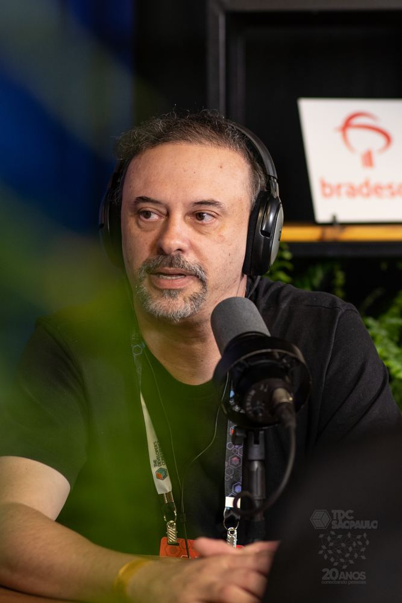
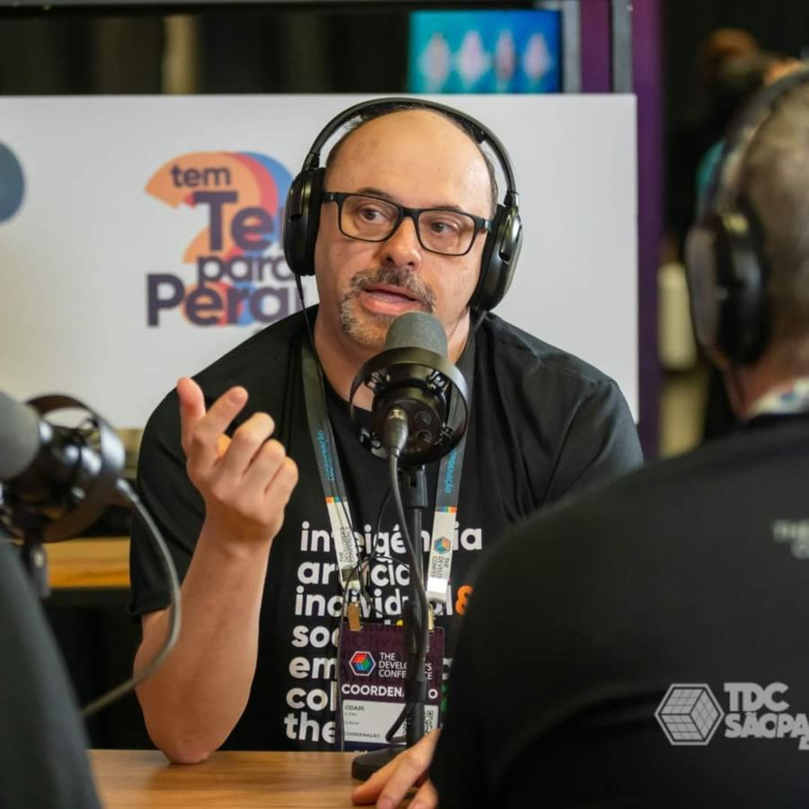
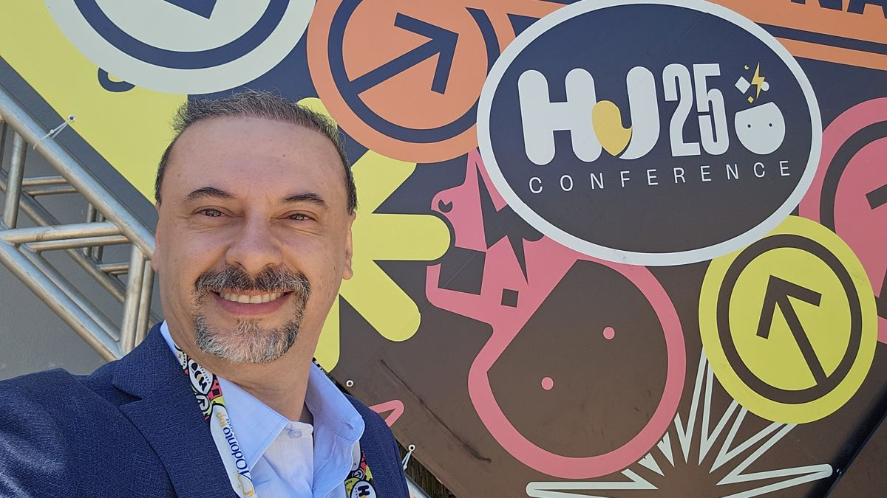
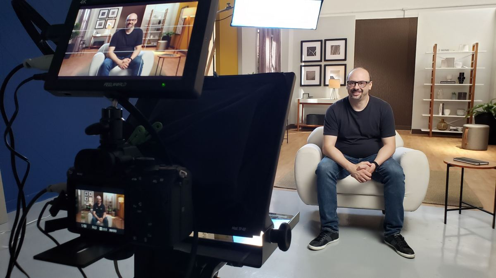

A regra de negócio mora na cabeça de alguém
Sem documentação viva, a IA gera código que quebra o que já funcionava, e cada correção depende de quem lembra o porquê.
Ajudo startups pequenas e médias a reformular o processo de desenvolvimento, preparar os líderes de tecnologia e medir o ganho real da IA nas entregas. Seu time executa. Eu acompanho, direciono e meço.

Sem documentação viva, a IA gera código que quebra o que já funcionava, e cada correção depende de quem lembra o porquê.
Não existe esteira comum. A IA produz mais código, o code review vira gargalo e a entrega não acelera de verdade.
Quanto a IA reduziu de custo? Quanto aumentou a vazão das demandas que trazem retorno? Sem baseline, não há resposta.
Reformulo o fluxo do card ao deploy para que a IA trabalhe com contexto, e as pessoas validem o que importa.
Acompanhamento individual ou em grupo para tech leads, engineering managers e CTOs que precisam liderar a mudança.
O mesmo método aplicado a produto, dados e operação, para que a aceleração não fique restrita à engenharia.
Nada de laboratório. Escolhemos juntos uma entrega importante e usamos ela para instalar o método e medir o resultado.
Mapeamos o fluxo atual e medimos capacidade, velocidade e lacunas do time antes de mudar qualquer coisa.
Montamos a base de conhecimento, o modelo de especificação e os agentes que vão rodar, definidos com o time.
O time entrega a demanda com IA. Eu acompanho de perto, às vezes com a mão no código, às vezes direcionando.
Comparamos com o baseline, apresentamos os números à liderança e definimos o próximo ciclo.
Encontros de duas horas, três vezes por semana, durante o ciclo. Cada ciclo é independente: ao final, você decide se continua, por até três ciclos.
São 25 anos liderando times de 15 a 60 pessoas. Hoje atuo como architecture manager e principal engineer, e levo para as startups o que funcionou em empresas de grande escala.

São 25 anos em tecnologia, passando por coordenação, gerência e head de TI, com times de 15 a 60 pessoas. Atualmente sou architecture manager e principal engineer. Pela Tech SkillUp, ajudo startups a transformar a promessa da IA em entrega medida, e formo líderes de tecnologia em sala de aula.
Há três anos e meio em sala de aula, com mais de 450 alunos formados. Ensinar obriga a transformar experiência em método, e é esse método que levo para os times.
Coordeno a trilha de Liderança Técnica no TDC, crio os podcasts Conversa Ágil e Depende Cast e falo em eventos como o HJ25.






Hacks para vencer no jogo, escritos para engineering managers e líderes de tecnologia que querem resultado sem perder o time no caminho.
Uma conversa de 30 minutos, sem custo, para entender seu contexto e dizer com franqueza se um ciclo de quatro semanas faz sentido agora.